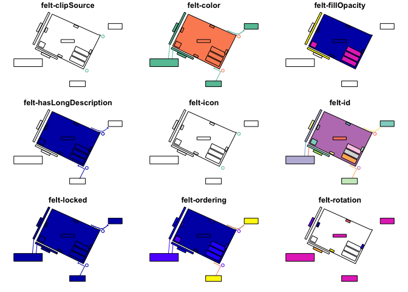

The goal of feltr is to read maps from Felt as simple feature or SpatRaster objects.
Installation
You can install the development version of feltr like so:
pak::pkg_install("elipousson/feltr")Example
You can use read_felt_map() to create an sf object with features from a map URL.
url <- "https://felt.com/map/Site-Plan-Example-PGTipS2mT8CYBIVlyAm9BkD"
site_plan <- read_felt_map(url)
plot(site_plan)
#> Warning: plotting the first 9 out of 22 attributes; use max.plot = 22 to plot
#> all
get_felt_map() returns a list with basic information about a map (set read = TRUE to read map elements and layers at the same time):
get_felt_map(url)
#> $attributes
#> $attributes$title
#> [1] "Site Plan Example"
#>
#> $attributes$url
#> [1] "https://felt.com/map/Site-Plan-Example-PGTipS2mT8CYBIVlyAm9BkD"
#>
#>
#> $id
#> [1] "PGTipS2mT8CYBIVlyAm9BkD"
#>
#> $links
#> $links$self
#> [1] "https://felt.com/api/v1/maps/PGTipS2mT8CYBIVlyAm9BkD"
#>
#>
#> $type
#> [1] "map"You can also use read_felt_raster() (a wrapper for rasterpic::rasterpic_img()) to create a SpatRaster object from a “Image” type feature in Felt.
image_map <- read_felt_raster(
"https://felt.com/map/feltr-sample-map-read-felt-raster-oiinodTbT79BEueYdGp1aND",
"https://tile.loc.gov/image-services/iiif/service:gmd:gmd370:g3700:g3700:ct003955/full/pct:12.5/0/default.jpg"
)
image_map
#> class : SpatRaster
#> dimensions : 655, 764, 3 (nrow, ncol, nlyr)
#> resolution : 6439.813, 6439.813 (x, y)
#> extent : -12209153, -7289135, 2474851, 6692929 (xmin, xmax, ymin, ymax)
#> coord. ref. : WGS 84 / Pseudo-Mercator (EPSG:3857)
#> source : file82c85607acd5.jpg
#> colors RGB : 1, 2, 3
#> names : file82c85607acd5_1, file82c85607acd5_2, file82c85607acd5_3For more information on the Felt Public API check out the guide to Getting Started with the Felt API or the Felt Public API reference.
Related Projects
- {feltr}: A R package with the same name that provide very similar functionality to this package.
- felt-upload: A Python package to upload data to Felt.
- Add to Felt QGIS Plugin: A QGIS plugin for uploading data to Felt.